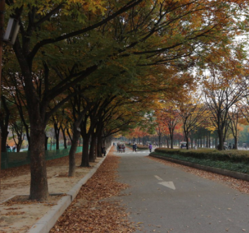
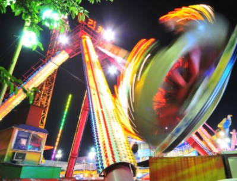
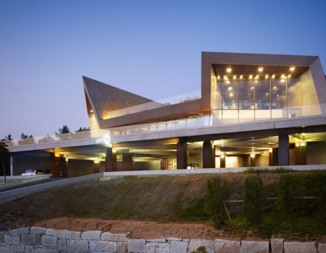

인천 중구 을왕동에 위치한 해수욕장으로 늘목, 얼항 등으로 불리며 1986년 국민관광지로 지정되었습니다. 백사장의 길이는 약 700m이고 평균 수심은 1.5m로 비교적 큽니다.
추천!

인천 대공원
그것은 관모산(162m)에 걸쳐 있고 소래산 줄기의 상아산, 거마산과 접해 있습니다. 관모산은 산의 모양이 관과 같다고 하여 거마산이 말이 서 있는 모양을 닮았다고 하여 붙여진 이름입니다.
추천!

월미도
섬의 외관이 반달 꼬리처럼 휘어져 있다는 데서 지명이 유래했습니다. 1900년대 초반까지 부천시 영종면에 속했다가 1914년 9월 1일 인천부에 편입되었습니다. 원래 인천역에서 서쪽으로 1㎞ 떨어진 면적 0.66㎢의 섬이었으나 1920년대 초반 돌제방이 쌓이면서 내륙으로 연결되면서 세관 검역소, 측초소, 무선 전신국 등 각종 기관이 들어섰습니다.
추천!

카페 오라
을왕리 바다가 한눈에 내려다보이는 탁 트인 전망이 인상적인 카페입니다. 2009년 한국건축문화대상을 받은 700평 규모의 모던한 건물도 인상적인 곳이지요. 커피와 베이커리 등 디저트 메뉴 외에 파스타와 식사도 즐길 수 있어 좋습니다.